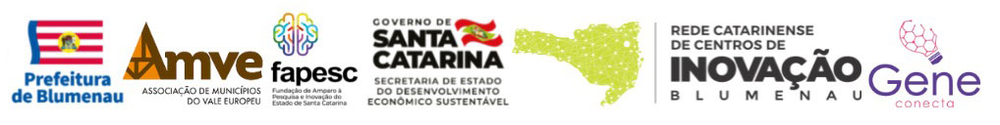

Sobre nós
Criado pela BLUSOFT, em parceria com a FAPESC, promovemos uma maratona de inovação que agitou o final de semana em Blumenau. Foram 21 equipes e mais de 500 pessoas que passaram pelo Complexo Desportivo da Furb durante as 24 horas ininterruptas de atividades. O Hackathon Tech Recruiter People foi a primeira maratona do Estado com foco em recursos humanos.
- Assembleia para eleição de conselho
- Estatudo Social
- Balanço Social 2021
Apoiadores
- 
Diretoria
- Presidente: André Carlos
- Tesoureira: Ana Lucia
- Ajuda Cintia